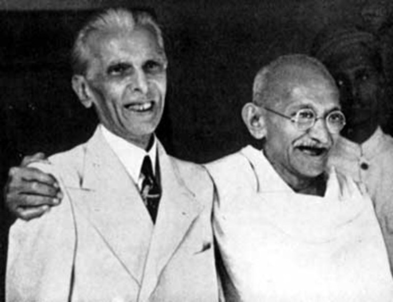

Time Line
Short Biography of Gandhi
Oct 1869
Birth
May 1883
Marriage

Sep 1888
Law School

Jul 1907
Satyagraha
Jan 1908
Gandhi goes to Jail

Apr 1919
Amritsar Massacre

Aug 1920
Nonviolent Resistence

Jan 1930
Declaration of Independence

Mar 1931
Salt March
Sep 1932
Fasting

Aug 1942
Indian National Congress

Jun 1944
Gandhi visits Muhammed Ali Jinnah

Aug 1947
Indian independence

Sep 1947
Fighting between Hindus and Muslims

Jan 1948
Gandhi's Death

Mahatma Gandhi quotes
"Happiness is when what you think,what you say ,& what you do in harmony......."
--Mahatma Gandhi ji